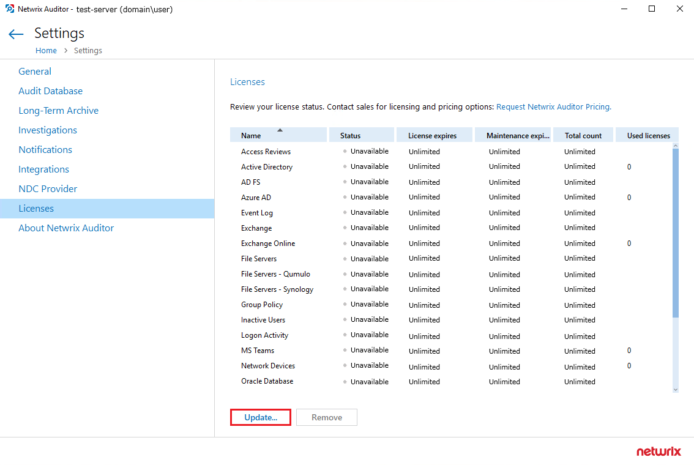

Question
How to apply a Netwrix Auditor license?
Answer
You may have received an email from our licensing team — download the attached .lic file and follow the steps below:
-
In the main Netwrix Auditor screen, go to Settings > Licenses and click Update.
 -
Navigate to your .lic file and select the file.
-
Click Open.
The license is now applied to your Netwrix Auditor instance. Verify the information in the Licenses section.